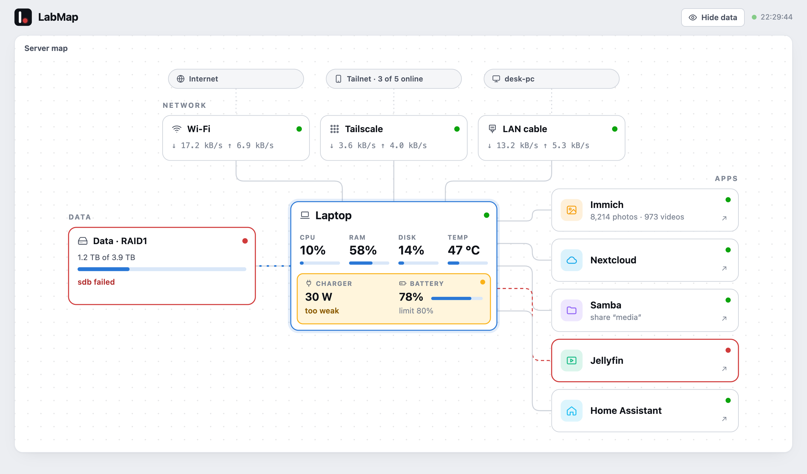
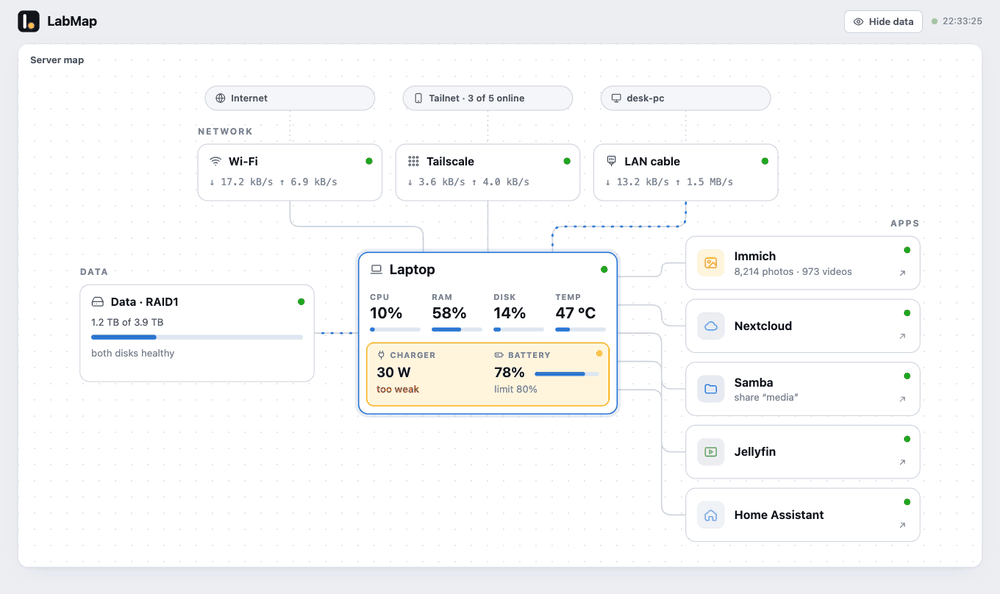
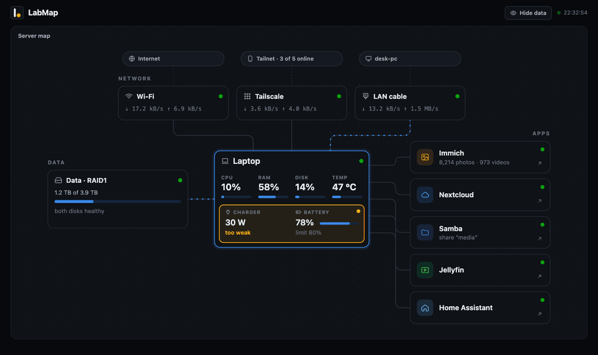

Problems light up where they are.
No list of warnings to read and no wall of graphs. Every part of the map has a status light, and the dot in the logo shows the worst one – even in a background browser tab.
Everything works. The map stays calm.
A weak charger, a full disk, a container failing its health check.
A dropped RAID disk, a stopped app, Docker not answering.
See the failure, not a dashboard
A degraded array turns the disk box red. A stopped container turns its app red. Click the glowing part and LabMap tells you, in plain words, what's wrong.
- RAID (mdadm): missing disk, resync, mismatches, free space
- Docker: stopped, restarting or unhealthy containers
- The machine: CPU temperature, memory, system disk
- Laptop as a server: charger too weak, battery draining

How fast is it, really?
Open a network and LabMap runs a short speed test. The server measures its own internet, next to the link speed the Wi-Fi card negotiated. Over the LAN cable or Tailscale, your browser measures the path between you and the server – and Tailscale tells you if it's direct or relayed.

Details on click, nothing up front
Charts, versions, addresses and containers live one click away. Every chart keeps the last five minutes and shows exact values under the cursor. Showing it to a friend? Hide data blanks out IPs, device names and saved logins.

Tiny on purpose
One Python file and one HTML file. Standard library only – no database, no build step, no agents to install.
Private by default
A sandboxed systemd service that only your LAN cable and Tailscale can reach. It can't talk to the internet itself.
Phone, light and dark
The map rearranges itself for a phone screen, and details open as a bottom sheet. Follows your system theme.
Click around a demo server.
This is the real LabMap page, running in your browser against a made-up laptop server. Open the networks to run a speed test, then flip Simulate a failure in the corner and watch the broken parts light up.
- Hover and click work – every box opens its details
- All data is fake and stays in your browser
Running in a minute.
Clone the repository on your server and run the installer. It sets up the service, asks systemd to keep it locked down and opens the firewall for the LAN cable and Tailscale only.
Linux with systemd and Python 3. Docker, mdadm, Tailscale and a battery are optional – missing parts simply don't appear.
# on your server git clone https://github.com/wojtekbakun/labmap.git cd labmap sudo bash install.sh # then open http://<server>/